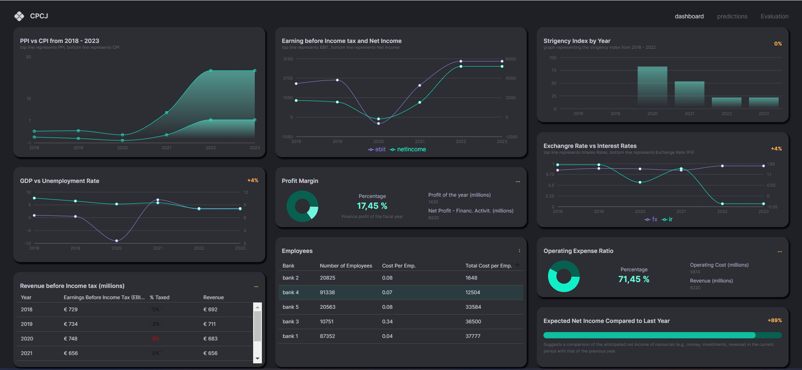

This project addresses a critical challenge in the banking sector: incorporating Net Inflow forecasts as a starting point for budget planning. Developed as part of the Fundamentals of Business Management course for the CCH Tagetik Business Data Challenge , the project focuses on creating a comprehensive forecasting system that leverages macroeconomic data and operational costs to perform margin simulations and enable financial institutions to react to adverse scenarios.
The core deliverable is an interactive dashboard featuring key performance indicators essential for conducting what-if analyses. This tool empowers users to examine how changes in macroeconomic conditions and business assumptions impact Earnings Before Interest and Taxes, enabling strategic decision-making in dynamic market conditions. The project team, comprising Cattari Simona, Poiani Marco, Carella Alessandro, and Jallow Ebrima, extracted data from the top five Italian banks by assets (Unicredit, Intesa Sanpaolo, MPS, BPER Banca, and Banco BPM) covering the period from 2018 to 2022, deliberately including data before and during the COVID-19 pandemic to assess the impact of significant macroeconomic events.
Through this project, I gained comprehensive insights into financial forecasting and business analytics in the banking sector. I developed a deep understanding of financial statement analysis, particularly consolidated Profit and Loss statements, learning to identify and extract the most relevant items such as Net Interest Margin, Net Fees and Commissions, Operating Income, and Administrative Expenses. These elements proved crucial in understanding a bank's financial health and operational efficiency.
I learned to work with critical macroeconomic indicators including GDP, unemployment rates, Producer Price Index, Consumer Price Index, exchange rates, real interest rates, and the COVID-19 Stringency Index. Understanding how these external factors influence banking performance was essential for creating accurate forecasts. The project taught me that while banks can control their internal operations to some extent, macroeconomic factors play an equally important role in determining end-of-year financial outcomes.
From a technical perspective, I mastered the selection and implementation of machine learning models suitable for small datasets. Working with only 25 samples and 49 features, I learned why models like Linear Regression, Ridge, Lasso, ElasticNet, and Decision Tree Regressors are particularly effective in such scenarios. I gained hands-on experience with multiple evaluation metrics including Mean Squared Error, Mean Absolute Error, R-squared score, Explained Variance Score, Accuracy, Precision, Recall, and F1 Score, understanding that relying on multiple metrics provides a more robust assessment when traditional cross-validation isn't feasible due to limited data.
The project significantly enhanced my full-stack development capabilities. I learned to integrate machine learning models with web applications using Django for the backend and React with Material UI for the frontend. Working with the scikit-learn library deepened my understanding of model serialization, data preprocessing with StandardScaler, and creating RESTful API endpoints for frontend-backend communication.
Importantly, I learned about the challenges of working with real-world financial data, including the importance of data transparency, the differences between individual and consolidated financial statements, and the need to balance comprehensive analysis with user experience. The project taught me to think strategically about presenting complex financial information in an accessible way, making sophisticated forecasting tools usable for business decision-makers who may not have technical backgrounds.
The foundation of this project rested on meticulous data collection and analysis of financial statements from Italy's leading banking institutions. We focused exclusively on consolidated Profit and Loss statements, which provide a comprehensive view of both parent companies and their subsidiaries, offering a more accurate representation of overall financial health and performance. Data was gathered directly from the annual reports published on the official websites of major banks in italy, namely: Unicredit, Intesa Sanpaolo, Monte dei Paschi di Siena, BPER Banca, and Banco BPM, covering the years 2018 through 2022.
Our dataset comprises 25 rows and 50 columns, representing quarterly data from five banks over five years. From the income statements, we extracted key financial metrics: Interest Income and Similar Revenues, Net Interest Margin, Fees and Commissions, Operating Income, Net Profit from Financial Activities, Administrative Expenses (including staff costs and other administrative expenses), Operating Costs, EBIT, and Net Income. Each of these items was carefully selected for its significance in understanding bank profitability and operational efficiency.
The macroeconomic component of our dataset incorporated seven key indicators: GDP Index reflecting economic health, Unemployment Rate indicating labor market stability, Producer Price Index showing production cost dynamics, Consumer Price Index representing inflation, Exchange Rates measuring currency relative values, Real Interest Rate accounting for inflation effects on nominal rates, and the COVID-19 Stringency Index capturing pandemic-related restrictions. These macroeconomic variables were sourced from the World Bank database and the financial reports themselves, ensuring data consistency and reliability.
An important aspect of our data collection strategy was the temporal scope. By including data from 2018 onwards, we captured both pre-pandemic and pandemic-era financial performance, enabling our models to learn from extreme market conditions. This decision proved valuable for assessing how adverse scenarios impact banking operations and for validating the robustness of our forecasting approach. Additionally, we included operational data such as the number of employees and average cost per employee, recognizing that personnel costs represent a significant portion of banking operational expenses.
The machine learning implementation phase required careful consideration of our dataset constraints. With only 25 samples, we needed models that could perform reliably without extensive training data. We implemented five distinct models: Linear Regression as our baseline, Ridge Regression to handle multicollinearity through L2 regularization, Lasso Regression for feature selection via L1 regularization, ElasticNet combining both L1 and L2 penalties, and Decision Tree Regressor for capturing non-linear relationships in the data.
Our evaluation strategy employed a comprehensive set of metrics to assess model performance from multiple angles. Mean Squared Error and Mean Absolute Error provided insights into prediction accuracy, while R-squared score and Explained Variance Score measured how well models captured data variability. We also calculated Accuracy, Precision, Recall, and F1 Score to evaluate model reliability from different perspectives. This multi-metric approach was essential given that our limited dataset size prevented the use of traditional k-fold cross-validation.
The models were implemented using Python's scikit-learn library. We employed StandardScaler to normalize features, ensuring that variables with different scales wouldn't bias the models. All trained models, along with the scaler object and dataset splits, were serialized using Python's pickle module for efficient loading and prediction in the production environment. This approach ensured reproducibility and facilitated seamless integration with the web application.
A challenge we addressed was enabling predictions on user-provided data while maintaining consistency with the training data structure. We implemented functionality to calculate mean values from the uploaded dataset, which serve as default parameters for the what-if analysis. This design decision ensures that users start with realistic baseline values representative of their data, improving the relevance and interpretability of scenario analyses. The system allows users to adjust these parameters through intuitive sliders, immediately seeing how changes impact the predicted EBIT and Net Income.
The user interface was built using React and Vite, and styled with Material UI for a modern, professional appearance. The dashboard consists of three main pages: Predictions (Landing Page), Evaluation, and Dashboard. The architecture follows a clear data flow: users upload datasets to the frontend, which are processed by the Django backend to calculate initialization values and generate predictions, with results returned via RESTful API endpoints.
The Landing Page serves as the entry point where users upload their datasets. This triggers backend processing that extracts mean values for key features, preparing the system for what-if analyses. The interface provides immediate feedback and clear navigation to other sections of the application. The Evaluation page presents a comprehensive comparison of all implemented models, displaying their performance metrics. Users can review Mean Squared Error, Mean Absolute Error, R-squared scores, Explained Variance Scores, Accuracy, Precision, Recall, and F1 Scores for each model, enabling informed selection of the most appropriate model for their specific use case.
The what-if analysis functionality represents the dashboard's most important feature. Users can manipulate eight key parameters: GDP Index, CPI Index, PPI, COVID Stringency Index, Unemployment Rate, Real Interest Rate, Exchange Rates Percentage, and Cost Per Employee. Each parameter is controlled through sliders initialized with mean values from the uploaded dataset. As users adjust these sliders, the system sends the modified values to the backend, which generates new predictions based on the selected model. Results are immediately displayed, showing predicted values for key P&L items including Net Interest Margin, Net Fees and Commissions, Operating Income, Administrative Expenses, Operating Costs, EBIT, and Net Income.
Working with a limited dataset presented our primary challenge. With only 25 samples, many traditional machine learning approaches were not feasible. We addressed this by selecting models known to perform well with small datasets and employing multiple evaluation metrics. This strategy, combined with the inclusion of regularization techniques in models like Ridge, Lasso, and ElasticNet, helped prevent overfitting while maintaining predictive capability.
Another significant challenge involved extracting and structuring data from financial statements that, while standardized by the Bank of Italy, contained subtle variations across institutions. We resolved this through meticulous manual data extraction and verification, ensuring consistency in how we categorized P&L items across all five banks. This process required deep understanding of banking terminology and financial statement structure, demanding careful attention to detail and multiple validation passes.
User experience design for the what-if analysis posed an interesting challenge. We needed to make complex financial modeling accessible to users who might not have technical backgrounds. Our solution involved using sliders with intelligently calculated default values, clear labeling of parameters, and immediate visual feedback on predictions. We also provided textual explanations and contextual information to help users understand what each parameter represents and how it might impact financial outcomes.
Integrating macroeconomic variables required careful consideration of their temporal alignment with financial statement data. Since banks report annually but macroeconomic indicators often have different reporting frequencies, we needed to ensure proper time-matching between these datasets. We addressed this by using year-end or annual average values for macroeconomic indicators, maintaining consistency with the annual financial reporting cycle of our target institutions.